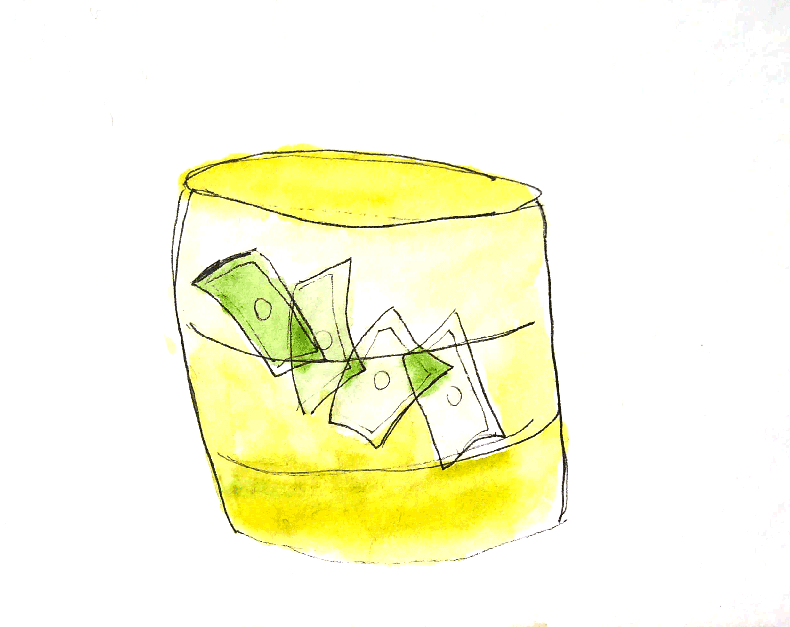
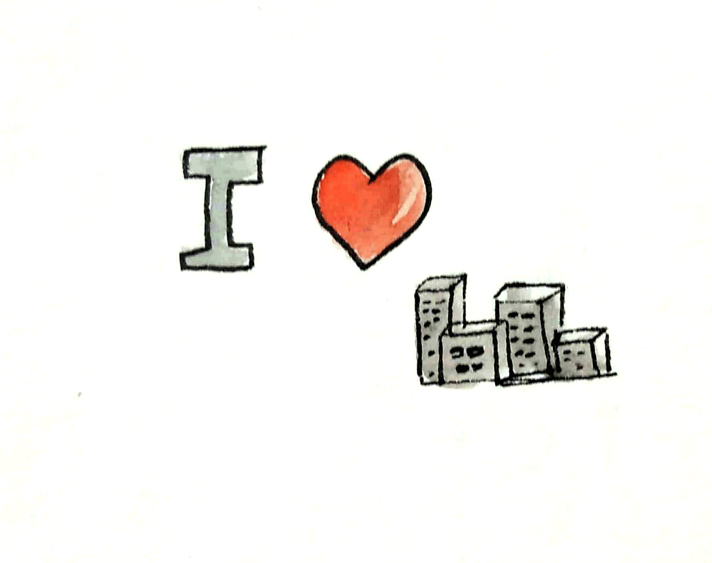
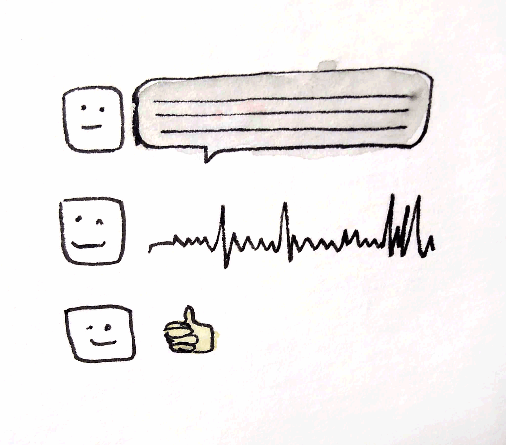

Swift Decommission

Com o objetivo de eliminar instituições intermediárias entre bancos na realização de transações especificas a solução utiliza blockchain para executar e mapear agentes e pontos que outras instituições fariam por um custo maior.
Recycle

Diante do desfio de 8 bilhões serem perdidos em lixo não reciclados foi proposta uma solução para melhorar a coleta seletiva de lixo. Com a utilização de geolocalização, a solução utiliza a colaboração entre agentes mapeando pontos para efetuar uma coleta de lixo completa.
Mais cultura

Com o desfio de estreitar a relação entre a cidade e o cidadão, o aplicativo propõe um novo modo de sugerir atividades culturais na cidade de São Paulo.
Juanito

Um chatbot que utiliza os recursos da inteligência artficial Watson para propor conversação entre pessoas que falem idiomas diferentes utilizando a compreensão do que é falado e replicando em outro idioma.